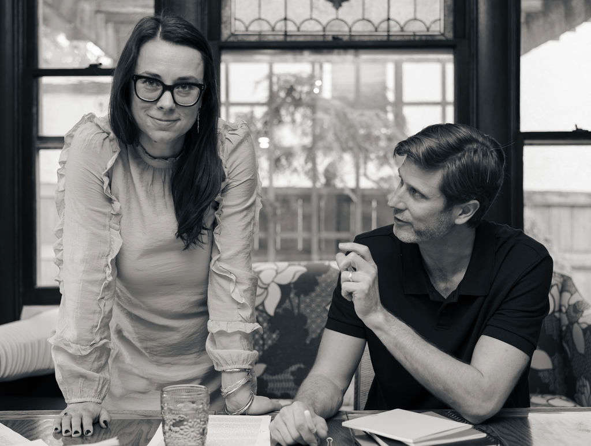
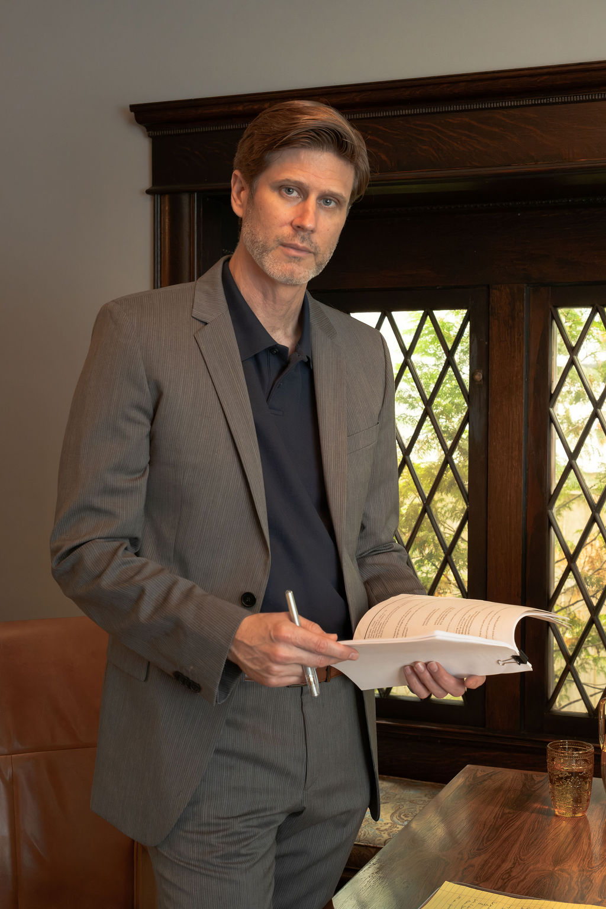

Practice Areas
Three practices, one conviction: the people we represent should never have to face powerful institutions, industries, or wrongdoers alone.

- For the EmployeeEmployment LawWrongful termination, discrimination, harassment, retaliation, and wage theft.
- For the Independent ArtistEntertainment LawCounsel from development through production, festivals, and distribution.
- For SurvivorsSexual Abuse & AssaultHolding individuals and institutions accountable, at your pace.
Employment Law
Work is more than a paycheck.
It is how we support ourselves and our families, build careers, form lasting relationships, and create a sense of security and purpose. When something goes wrong at work—when you are harassed, discriminated or retaliated against, underpaid, or lose your job, the impact can be traumatic and disruptive to life and events far beyond the workplace.
At Fellowship Law, we represent employees.
We believe that with work comes dignity. This includes the right to be treated fairly and speak up about discrimination, harassment, unsafe working conditions, or wrongdoing without fear of retaliation. Unfortunately, workplaces can fail to live up to these principles. And when an employer has access to greater resources, information, and power, the imbalance can feel intimidating and paralyzing, leaving you unsure of what your rights are or what action to take.
That is where we come in.
We represent employees in matters involving wrongful termination, discrimination, harassment, retaliation, wage theft, and workplace misconduct. Our role begins with careful listening to gain a thorough understanding of exactly what happened so we can provide you with clear and candid advice specific to your situation. Because no two employment issues are the same.
Attorney Mary Olszewska brings more than 15 years of experience representing workers in employment and civil rights matters. A seasoned litigator, she intuits that employment matters are about more than statutes, documents, and damages. They are about lives and livelihoods—careers, reputations, financial and emotional security, a sense of purpose and belonging that was violated by someone else’s actions.
At Fellowship Law, we approach every case with both rigor and humanity. We will tell you what we think, explain why we think it, and help you make informed decisions about what comes next. When litigation is necessary, we are prepared to see it through. When an earlier resolution better serves your interests, we pursue it thoughtfully and strategically. We take the time to understand what happened to you, what matters to you, and what you want your life to look like on the other side of the dispute.
Our goal is not simply to resolve a legal claim. It is to help restore some of the agency, power, and dignity that can be lost when a workplace betrays your trust and breaks the law.
Entertainment Law

Making independent art has never been easy.
Today, creators find themselves trying to navigate an industry defined by shrinking budgets, volatile distribution models, fragmented audiences, emerging technologies, and increasing pressure to do more with less. The economics continue to change. The platforms rise and wane. The only constant is that artists will continue to create because they have something to say—because the world needs their perspective, imagination, humor, criticism, and humanity.
The challenges of making the work do not mean you should have to make it alone.
Independent filmmaking and creative work are fundamentally collaborative. You rely on producers, performers, crew, investors, musicians, distributors, and countless others to help bring an idea into the world. Your lawyer should be part of that creative team—not someone who simply identifies problems from the sidelines, but an active ally who understands what you are trying to accomplish and helps you find a practical path forward at all levels of the creative process.
At Fellowship Law, this perspective comes from experience.
Attorney Zachary Weil is an Emmy® Award-winning filmmaker who came to entertainment law from the independent film world. He knows what it means to build a project from nothing: to raise money, stretch an inadequate budget, negotiate with collaborators, clear music and footage, navigate guild requirements, confront impossible deadlines, prepare a film for distribution, take a film to A-list festivals, and make difficult decisions when there is never quite enough money, time, or leverage.
He also knows how personal the work can be.
Independent artists pour years of their lives into projects that may begin as little more than an idea and a handful of people willing to see it through. When your resources are limited, every agreement matters. Every dollar matters. Every relationship matters. Good legal counsel should recognize those realities.
That is the kind of counsel we strive to provide.
We help independent filmmakers, producers, writers, artists, and creative companies protect what they are building without losing sight of why they are building it. Our advice is practical, strategic, and grounded in the realities of independent production. Sometimes this means identifying a serious legal risk. Just as often, it means helping find a reasonable solution that allows the work to continue.
Artists need advocates. They need collaborators. And sometimes, they simply need someone in their corner who understands what it took to get this far.
We do—because we have been there.
Supporting the Full Creative Lifecycle
Our entertainment practice supports projects from their earliest stages of development through production, distribution, and beyond.
Business & Entity Formation
Forming production companies and LLCs, structuring creative ventures, and establishing the legal foundation necessary to move a project forward.
Contracts & Negotiations
Drafting and negotiating agreements with producers, writers, directors, performers, crew, investors, financiers, vendors, and creative partners—with an emphasis on clear expectations and workable relationships.
Music, Footage & Rights Licensing
Clearing music, archival footage, photographs, artwork, and other third-party materials; negotiating licenses; and advising on fair use and other rights issues.
Copyright, Trademark & Chain of Title
Protecting creative works through copyright and trademark counseling, registrations, assignments, option and acquisition agreements, and the documentation necessary to establish clean chain of title.
Production Counsel
Providing practical legal support throughout development, pre-production, principal photography, and post-production, including talent and crew agreements, SAG-AFTRA and IATSE issues, releases, employment matters, and wage-and-hour compliance.
Financing & Incentives
Advising on equity investments, financing structures, film incentives and tax credits, investor documentation, and the legal issues involved in assembling an independent production.
Clearance & E&O
Reviewing scripts, cuts, titles, trademarks, likeness issues, and potentially sensitive material; providing clearance and fair-use analysis; and helping productions prepare for errors-and-omissions insurance and delivery.
Distribution & Festivals
Reviewing and negotiating distribution and licensing agreements, advising filmmakers as they navigate sales and festival opportunities, and helping protect the long-term value of their work.
Your Lawyer Should Be a Part of the Creative Process
The goal of entertainment counsel should not simply be to tell an artist what cannot be done.
Our job is to understand what you are trying to accomplish, identify the risks that actually matter, and help you find a responsible way to move forward. Because these projects simply would not happen without the will and determination you as the artist provide.
From the first agreement to the final delivery materials, Fellowship Law works to protect your rights, your relationships, and the work itself. We bring legal knowledge to the table, but we also bring something harder to teach: an understanding of what it feels like to be in the trenches trying to make something meaningful with far too little.
Sexual Abuse & Assault
Sexual abuse is an act of profound violation.
It can take away a person’s sense of safety, control, and trust. Survivors may carry fear, anger, shame, confusion, or grief long after the abuse itself has ended. For some, the trauma can make it difficult to speak about what took place. It can affect relationships, work, sleep, physical health, and the simple ability to feel safe in the world.
And when the person who caused the harm was someone you trusted—or when an institution that should have protected you failed to do so—the sense of betrayal can be overwhelming.
You do not have to face all this alone.
At Fellowship Law, we represent survivors of sexual abuse and assault with compassion, patience, and resolve. We understand that coming to a lawyer may itself feel frightening. Telling your story can be difficult. Deciding whether to take action can feel even harder.
Our first job is to listen.
You control the pace of the conversation. We explain your options clearly, answer your questions honestly, and help you decide what justice means for you. There is no single path forward for every survivor. For some, accountability means bringing a civil case. For others, it means finally understanding their rights, confronting an institution that failed them, or reclaiming a measure of control that was taken away.
Whatever the path, you deserve an advocate beside you.
Compassion Does Not Mean Weakness
Attorney Mary Olszewska has spent more than 15 years representing people whose rights and dignity have been violated, including survivors of sexual abuse. Her approach begins with empathy, but it does not end there.
Mary is a trial lawyer.
She has built her career standing beside individuals confronting defendants and institutions with far greater resources. She understands that representing a survivor requires more than knowing the law. It requires patience. It requires trust. It requires the ability to listen closely to painful truths without looking away. And when accountability requires it, it demands the preparation and resolve to take a case to trial.
Holding People—and Institutions—Accountable
Sexual abuse does not always occur in isolation. Schools, churches, employers, youth organizations, medical providers, residential facilities, and other institutions may have opportunities to prevent abuse, respond to warning signs, investigate misconduct, or protect vulnerable people.
When those institutions fail, the legal system can provide a means of accountability.
- Sexual assault and abuse
- Childhood sexual abuse
- Abuse by clergy, teachers, coaches, employers, medical professionals, and other trusted individuals
- Abuse occurring in schools, churches, workplaces, healthcare settings, and other institutions
- Institutional negligence and failures to protect
- Sexual harassment and coercion
- Retaliation against individuals who report abuse or misconduct
You Are More Than What Happened to You
A lawsuit cannot erase abuse. It cannot give back the time that was taken or undo the harm that was caused.
But accountability can matter.
Being heard can matter. Having someone finally take what happened seriously can matter. Holding a person or institution responsible can matter. And for some survivors, taking action can be one part of reclaiming the power and autonomy that abuse attempted to take away.
At Fellowship Law, we will never reduce you to what happened to you. You are a person first. Your story belongs to you. Your decisions belong to you.
Our role is to listen, to advise, to protect, and—when you are ready—to stand beside you and fight.
Let’s talk about what happened.
A confidential, no-cost conversation is the first step. We listen, then tell you candidly what we think.